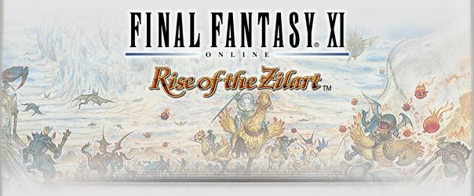

Level 75 reference · Zenith rules
These missions are accessible after attaining Rank 6 in your home nation and with the installation of the Rise of the Zilart expansion pack.


| Zilart Mission No. | Title | Type |
|---|---|---|
| Zilart Mission 01 | The New Frontier | Cutscene |
| Zilart Mission 02 | Welcome to Norg | Cutscene |
| Zilart Mission 03 | Kazham's Chieftainess | Cutscene |
| Zilart Mission 04 | The Temple of Uggalepih | Fight |
| Zilart Mission 05 | Headstone Pilgrimage | Fight |
| Zilart Mission 06 | Through the Quicksand Caves | Fight |
| Zilart Mission 07 | The Chamber of Oracles | Cutscene |
| Zilart Mission 08 | Return to Delkfutt's Tower | Fight |
| Zilart Mission 09 | Ro'Maeve | Cutscene |
| Zilart Mission 10 | The Temple of Desolation | Cutscene |
| Zilart Mission 11 | The Hall of the Gods | Cutscene |
| Zilart Mission 12 | The Mithra and the Crystal | Fight |
| Zilart Mission 13 | The Gate of the Gods | Cutscene |
| Zilart Mission 14 | Ark Angels | Fight |
| Zilart Mission 15 | The Sealed Shrine | Cutscene |
| Zilart Mission 16 | The Celestial Nexus | Fight |
| Zilart Mission 17 | Awakening | Cutscene |
| Zilart Mission 18 | The Last Verse | Conclusion...? |
Adapted from Eden Wiki: Category:Rise of the Zilart Missions · Contributors and history · CC BY-SA 4.0. Revision 39891. Layout, links and optional background text adapted for Zenith.
Articles
- Ark Angels
- Awakening
- Headstone Pilgrimage
- Kazham’s Chieftainess
- Return to Delkfutt’s Tower
- Ro'Maeve (Mission)
- The Celestial Nexus
- The Chamber of Oracles
- The Gate of the Gods
- The Hall of the Gods
- The Last Verse
- The Mithra and the Crystal
- The New Frontier
- The Sealed Shrine
- The Temple of Desolation
- The Temple of Uggalepih
- Through the Quicksand Caves
- Welcome t’Norg